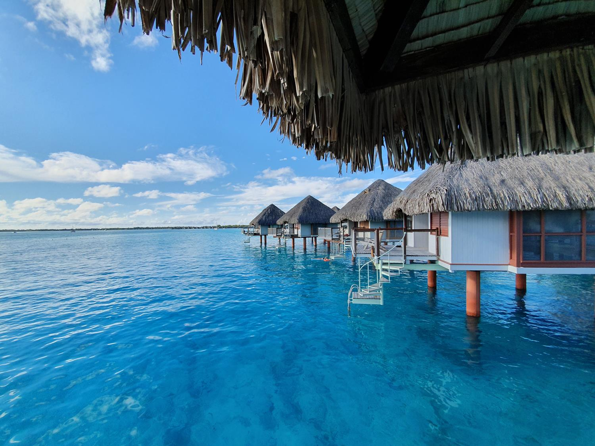
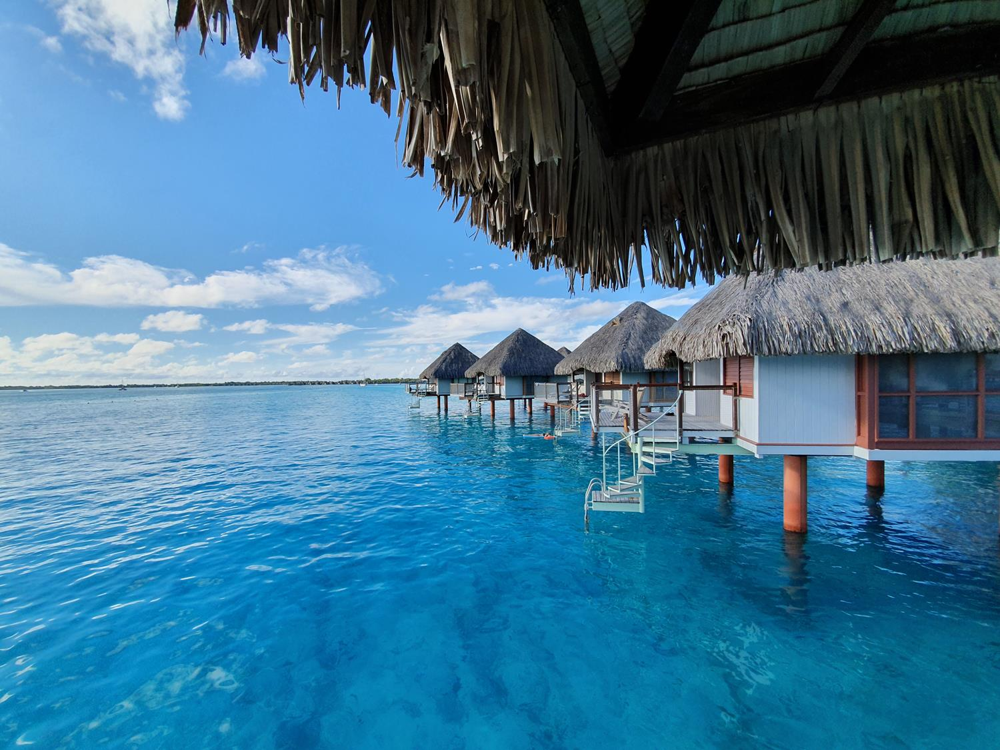
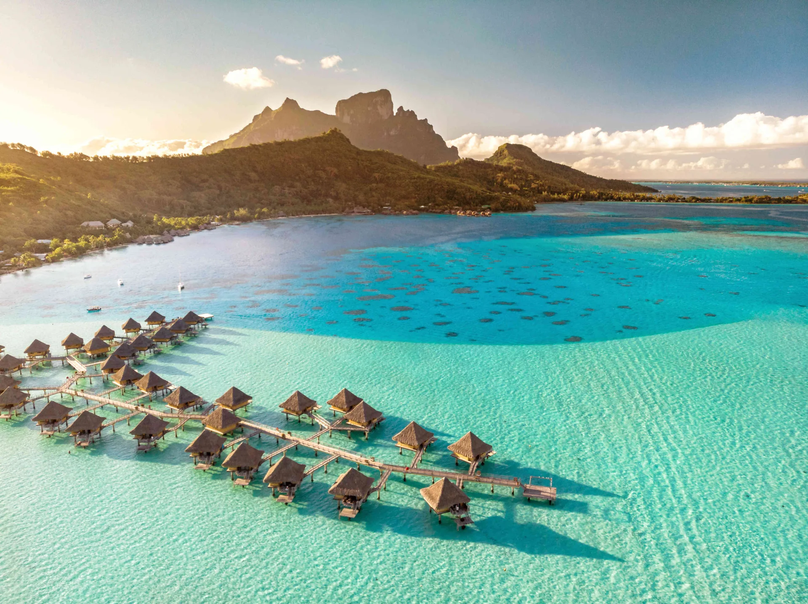
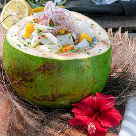
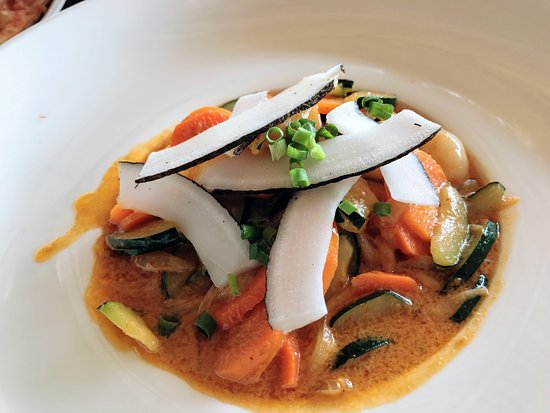
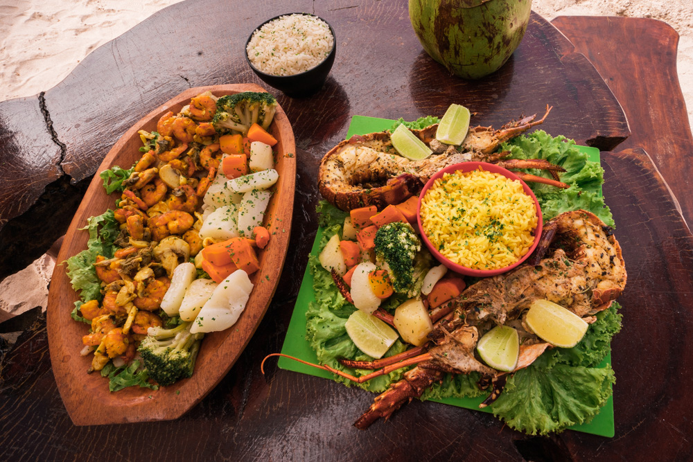

ilhas de sotavento


Oencontra-se rodeada por uma laguna delimitada por um recife de coral de onde sobressaem algumas pequenas ilhotas, os motus. No interior deste arco erguem-se dois picos, o Monte Pahia e o Monte Otemanu, este último com 727 m de altitude (o ponto mais alto da ilha), reminiscências de um vulcão entretanto extinto. O nome original da ilha em língua taitiana, Pora Pora, pode ser traduzido como nascida primeiro.
o melhor dia pra ir é entre entre junho e outubro. Nos meses de junho e julho, ocorrem em diversas ilhas da Polinésia Francesa festas típicas e competições esportivas.
Descubra como economizar em passagens e hospedagens, sem abrir mão da qualidade.

Belezas Naturais: Muitos ficam maravilhados com as paisagens deslumbrantes, como as águas cristalinas, as lagoas de cor azul-turquesa e as montanhas impressionantes.
Frutos do Mar: Pratos de peixe fresco, como o famoso "poisson cru" (peixe marinado em limão e leite de coco), são muito populares. Também é comum encontrar lagostas e camarões.
Frutas Tropicais: As frutas frescas, como abacaxi, manga e coco, são frequentemente utilizadas em sobremesas e coquetéis. Culinária Francesa: Devido à influência da França, você encontrará pratos sofisticados, como baguetes, queijos e pratos de carne preparados com técnicas refinadas. Ceviche e Saladas: O ceviche, feito com peixe marinado e temperado, é uma escolha refrescante, especialmente em climas quentes. Banana e Coco: Pratos com banana e coco são comuns, sendo usados em sobremesas e também em pratos principais.   